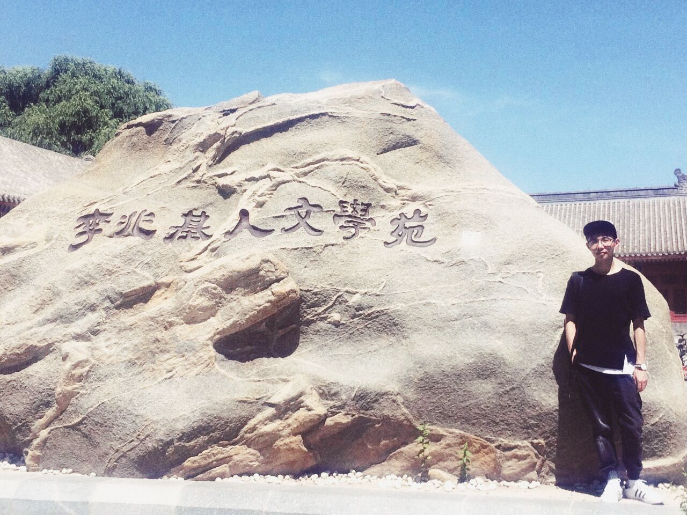
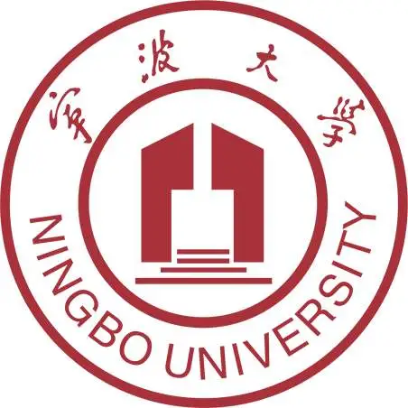

|
 |
本科生,预备党员 |
|
 |
本科 宁波大学 (2019.9 up to now)
|
我现在是一名本科三年级的学生(将于2023年6月毕业), 就读于宁波大学 数学与统计学院，目前专业排名: 1/25。
本科阶段我涉及过的课外研究（不含课程大作业）包括：
水下图像复原(2022.1 ~ 2022.4)：基于计算机视觉领域最前沿的Swin Transformer模型，针对任务特性引入卷积操作进行改进，结合重新设计的损失函数来建立用于复原水下图像的深度网络，在多个全参考数据集上取得了SOTA，并在无参考数据集上取得了目前最好的视觉效果。（在投）
资产泡沫检测(2021.12 ~ 2022.2)：利用随机过程中的严格局部鞅来定义资产泡沫，从而利用Bubble Theory将其转化为判断积分有界问题。建立资产价格过程的SDE后，利用准MLE估计SDE的参数来判断积分是否有界，从而得到泡沫信号。此外，针对中国股市的弱有效性，利用隐马尔可夫模型和过滤条件来平滑泡沫信号。最后，检验了全中国股市的泡沫分布是否服从广义Gamma分布（重要的寿命分布）来检验方法的有效性。（初稿）
亚式期权定价的数值方法(2021.11 ~ 2022.12)：分别使用Moment Matching和PDE方法求解亚式期权的数值解。其中，Moment Matching分别尝试了Gamma近似和对数正态近似；PDE方法则尝试将Shi, Vecer, Dubois和Lord等人的PDE纳入统一的框架来求解数值解。（暂未整理）
专利侵权案预估辅助系统：基于DNN和LSA模型(2021.4 up to now)：主要建立基于深度神经网络（DNN)的用于专利侵权案预估的辅助系统，供非专业人员和初级法律人员使用，使用户能通过选择涉及案件的各种特征（如侵权时间、侵权数量、原告是否为外国人等）获得模型预测的侵权赔偿金额（非精确金额，为金额类别，例如20-50万）；并允许用户输入一段给定格式的简要案情介绍，返回数据库中几项最相似的过往案例。(研究中，初步模型已部署在此 )。
合金腐蚀化学过程的动态蒙特卡洛模拟(2021.4 up to now)：在合金的化学腐蚀过程中，合金表面原子或者分子的脱落可以用数学模型来描述。其中两组分和三组分合金的表面原子或者分子的脱落可以用动态蒙特卡洛方法来模拟。该研究将开发一种程序来模拟这个动态过程，从而可以通过参数调节来控制化学工程。 （研究中）
基于有向网络模型的音乐影响建模 (2021.2美赛期间)：为了研究音乐和流派的进化和革命趋势，构建了一个音乐影响力的有向网络。之后从病毒的传播力启发建立了音乐影响力测度。之后，我们考察了音乐流派的革命和发展，运用层次聚类分析和时间序列分析的方法探讨流派之间的相关性，并探讨了流派内部和流派之间的相似之处和影响。然后利用网络分析、语义分析和随机森林模型来寻找变革者。 此外，将上述工作应用于乡村音乐流派中，对其演变进行梳理和分析。最后，基于时间序列分析研究了社会、政治或技术变化对音乐的影响。（在投）
大湾区指数增强策略(2020.11 大湾区金融数学建模竞赛期间)：指数增强策略意在追求对基准指数的超额收益并控制主动风险。该研究首先评估了周换仓的情况下，以上周最强势的10支股票等权重分配仓位的策略效果。之后，要求在调仓时间和投资仓位不变的情况下，以大湾区指数成分股作为股票池，构建大湾区指数增强策略。我们引入了 PEG 改进选股策略。最后，在调仓时间、投资仓位和选股策略都可调整的情况下，引入 MA 均线策略来判断交易前的市场状态从而减少风险，取得了10年587.49%的策略收益。（未发表）
利率不确定性对宏观经济的负面影响：来自多个国家的证据(2020.10 ~ 2020.12)：通过一份利率预测专家们的月预测数据，我们将预测专家们的预测误差分解为共同预测误差和个人预测误差，对应了将利率不确定性分解为利率普遍不确定性和利率特定不确定性。之后，借助GARCH模型来估计利率普遍不确定性，使用数据的四分位数来估计利率特定不确定性。最后，使用VAR模型研究了三种利率不确定性对宏观经济的影响，发现均对宏观经济造成了负面作用，且利率普遍不确定性造成了首要的影响。（未发表）
沙漠掘金的动态规划模型(2020.9 数学建模竞赛期间)：曾经大热的沙漠掘金要求人们穿越沙漠的同时又要实现能够获得利益最大化。该研究将这种行为简化为小游戏后，在六种不同限制的关卡中实现利益最大化穿越沙漠的策略规划。除了建议动态规划模型求解，还利用马尔科夫链和蒙特卡洛模拟研究了缺少某种条件下的收益期望。最后，基于博弈论建立了多人游戏下的仿真模拟。（未发表）
基于XGBOOST分类算法的多因子选股策略(2020.7 ~ 2020.8 浙江省证券投资竞赛期间)：该研究主要基于剔除 ST、停牌股等风险股的全 A 股，引入九类共66个因子，使用XGBOOST算法进行分类。之后按照收益率将股票降序分类至12 种，选取收益最高的一类，引入分类期望，对预测概率＜0.25，分类期望＞3 的股票作空仓处理，以此确定初始选股列表。最后，在2天的调仓周期下使用 Var 模型设置5%的风险敞口来进行风控，并取得了74.11%的年化收益。（未发表）
全国民营银行效率评估：基于两阶段网络 DEA 模型(2019.11 ~ 2020.11)：为了更好对快速发展中的民营银行进行绩效评估，我们提出一个将银行的核心要素——存款作为中间产品的两阶段网络 DEA 模型，用于更准确地分析民营银行效率。我们还通过将存款分别视为输入和输出来与我们的模型结果进行比较，结果很好 地体现出存款对银行生产有着输入和输出的双重作用。此外，我们构造了一个“虚拟银行”一并纳入模型的求解中，用于反映民营银行行业的发展。（未发表）
基于微信小程序的移动校园平台设计与实现(2019.9 ~ 2019.11)：基于微信小程序框架结合Java后台技术进行了移动校园平台的设计与开发，主要实现的功能包括：注册登录模块、社区互动模块、活动课程模块、后台管理模块等。（已发表）
U-Net based Reinforced-Conv Swin Transformer for Underwater Image Enhancement
Tingdi Ren, Haiyong Xu
IEEE TRANSACTIONS ON EMERGING TOPICS IN COMPUTATIONAL INTELLIGENCE (submitted), 2022. [PDF]
Music Influence Modeling Based on Directed Network Model
Xuan Zhang，Tingdi Ren，Lihong Wang, Haiyong Xu
Mathematical Modelling of Natural Phenomena (submitted), 2022. [PDF]
基于微信小程序的移动校园平台设计与实现
任挺迪
数码设计, 2019. [PDF]
专利侵权案预估辅助系统：基于DNN和LSA模型(No. 2021R405061)
2021.4 up to now; 负责人; 经费:1万元
全国民营银行效率评估：基于两阶段网络 DEA 模型
2019.11 ~ 2020.11; 负责人; 经费:0.08万元
合金腐蚀化学过程的动态蒙特卡洛模拟(No. 2021R405062)
2021.4 up to now; 参与人; 经费:1万元
![[成绩单]](picture/Total_Transcript_CN.png){kind=link}